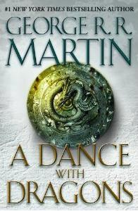

Ples sa zmajevima
Ples sa zmajevima je peta od sedam planiranih romana u epskoj Fantasi Series Pesma leda i vatre amerièkog pisca Džordža R. R. Martin. U nekim oblastima izdanje je objavljeno u dva dela pod nazivom Snovi i prašine i Posle gozbe. To je bio prvi roman u seriji koji æe biti objavljen nakon poèetka HBO serije adaptacije, Game of Thrones, i traje do 1.040 stranica.
3. marta, 2011. godine, izdavaèka otisak Bantam Rio najavio je da æe roman biti objavljen 12. jula 2011. godine Martin dostavlja rukopis svog urednika 27. aprila 2011. godine; Meðutim, veæ 2006. godine, martin je uzorak poglavlja koje su dostupne na njegovom sajtu i na amazon.co.uk
Osim toga, nemaèki ogranak Amazon.com (Amazon.de) objavio je prijavio 180 primeraka dve nedelje ranije greškom. SAD tvrdi povez je zvanièno objavljen 12. jula, 2011, otišavši nazad da izvrši pritisak na šest štampanim (u ukupnom iznosu više od 650.000 primeraka) pre 1,000+ stranu romana biæa na raspolaganju; 298,000 primeraka u štampi, digitalni i audio formata su prodati tog prvog dana sam, postao najveæi knjiga izdavaèke giganta Random House-a od 2011. godine i odbegli bestseler. Knjiga je bila druga u nizu debi na poziciji # 1 na listi Nev Iork Timesa najbolje prodavana. Nekoliko sedmica nakon objavljivanja, ples sa zmajevima je nastavio da bude # 1 i na Publishers Veekli i USA Todai autobiografijom.
Roman, zajedno sa svetkovina za Crovs, prilagoðen je za televiziju kao peti sezoni Game of Thrones, iako pojavile su se elementi knjige u seriji "treæeg, èetvrtog i šestog doba.